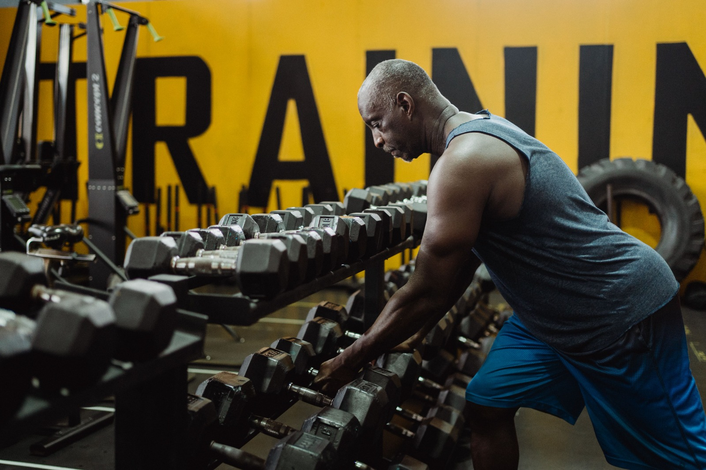
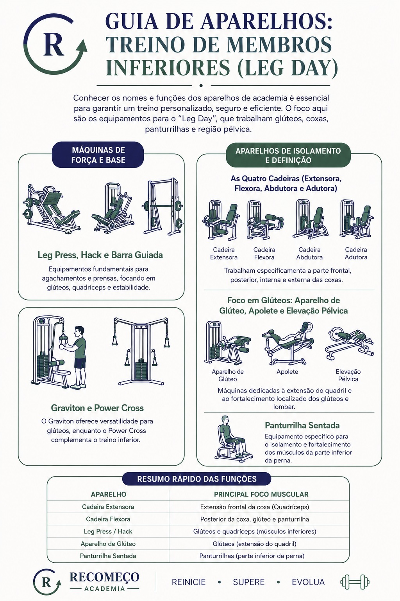
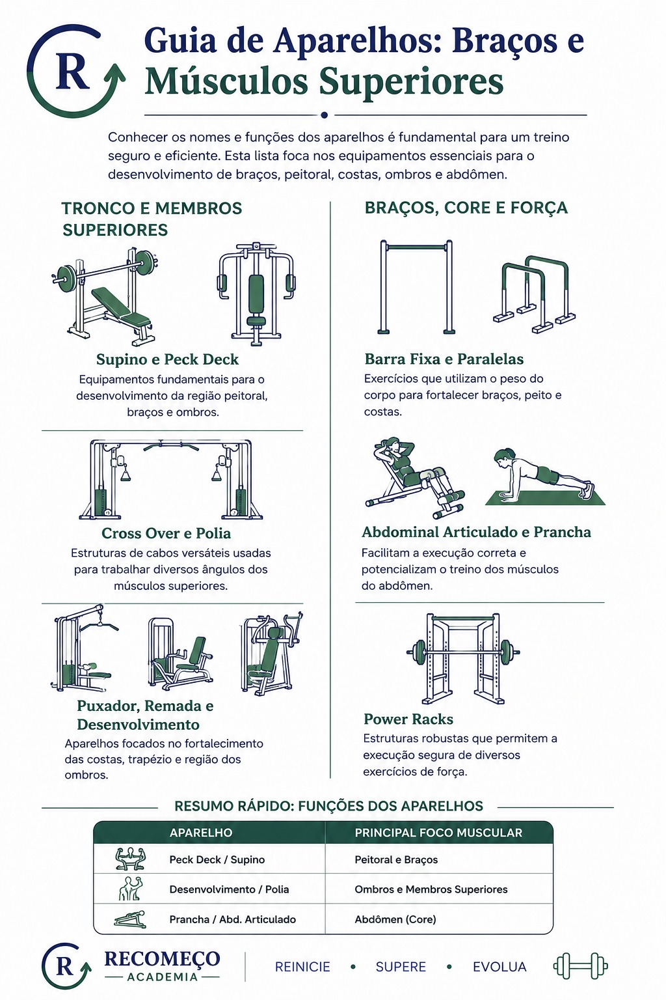
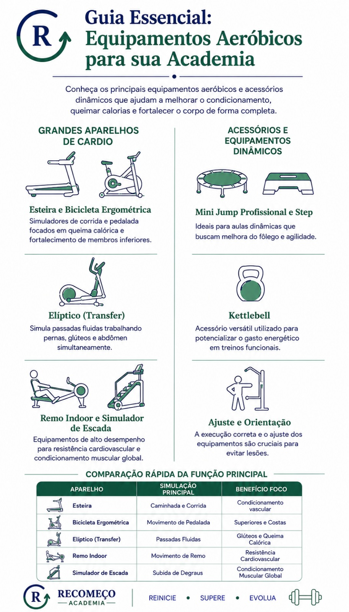

O conhecimento sobre os equipamentos disponíveis em um ambiente fitness é essencial para a elaboração de treinos personalizados, seguros e eficazes. Compreender a função de cada aparelho contribui para um melhor desempenho e alcance dos objetivos físicos.

O conhecimento sobre os aparelhos de academia, suas funções e a forma correta de utilização é fundamental para garantir a segurança, a eficiência e a qualidade dos treinos. Esse entendimento é importante não apenas para os alunos, mas também para instrutores e gestores, pois está diretamente relacionado à experiência dos usuários e ao sucesso do empreendimento. Pensando nisso, foi elaborado este guia com os principais aparelhos encontrados em academias, apresentando suas características, finalidades e aplicações. O objetivo é facilitar a identificação dos equipamentos e contribuir para um treinamento mais seguro, eficiente e adequado às necessidades de cada praticante.
O desconhecimento sobre os equipamentos utilizados na academia pode dificultar a execução adequada dos exercícios prescritos na ficha de treino. Dessa forma, conhecer os aparelhos de acordo com suas funções torna-se essencial para promover maior segurança, eficiência e autonomia durante a prática de atividades físicas. A seguir, são apresentados os principais equipamentos e suas respectivas aplicações.
Os equipamentos voltados para os membros inferiores são projetados para trabalhar diferentes grupos musculares da parte inferior do corpo, incluindo glúteos, coxas, panturrilhas e quadris. Sua utilização contribui para o ganho de força, resistência, estabilidade e condicionamento físico. Entre os principais aparelhos utilizados nos treinos de pernas, conhecidos popularmente como Leg Day, destacam-se:

Os equipamentos destinados ao treinamento dos membros superiores têm como objetivo fortalecer e desenvolver grupos musculares como bíceps, tríceps, antebraços, ombros, costas, peitoral e abdômen. Além de promoverem ganho de força e resistência, esses aparelhos contribuem para a melhora da postura, da coordenação motora e do desempenho em atividades do dia a dia. Entre os principais equipamentos utilizados para o treinamento da parte superior do corpo, destacam-se:

Os aparelhos aeróbicos são projetados para melhorar o condicionamento físico e cardiovascular, contribuindo para o aumento da resistência, o fortalecimento do sistema cardiorrespiratório e o gasto calórico. Além disso, auxiliam no controle do peso corporal e na promoção da saúde e do bem-estar. Entre os principais equipamentos utilizados para a prática de exercícios aeróbicos, destacam-se:
